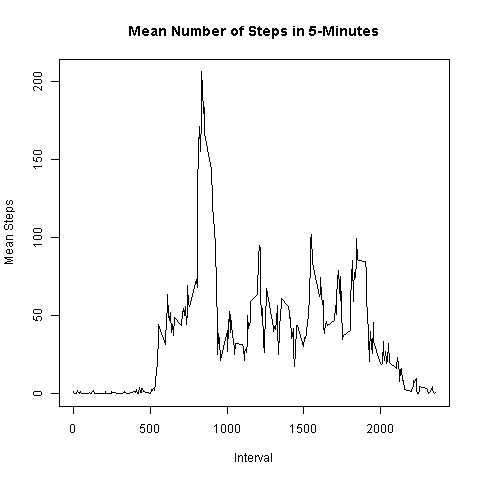
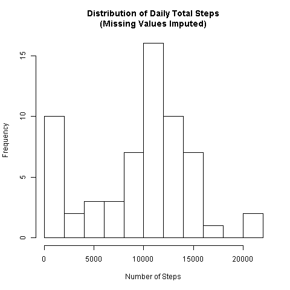
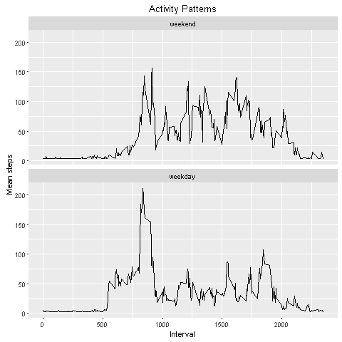

rm( list = ls() )
raw_file<-"activity.zip"
unzip(raw_file)
data <- read.csv('activity.csv', header=TRUE, na.strings="NA")
head(data)
## steps date interval
## 1 NA 2012-10-01 0
## 2 NA 2012-10-01 5
## 3 NA 2012-10-01 10
## 4 NA 2012-10-01 15
## 5 NA 2012-10-01 20
## 6 NA 2012-10-01 25
str(data)
## 'data.frame': 17568 obs. of 3 variables:
## $ steps : int NA NA NA NA NA NA NA NA NA NA ...
## $ date : Factor w/ 61 levels "2012-10-01","2012-10-02",..: 1 1 1 1 1 1 1 1 1 1 ...
## $ interval: int 0 5 10 15 20 25 30 35 40 45 ...
# check missing values
summary(data$steps)
## Min. 1st Qu. Median Mean 3rd Qu. Max. NA's
## 0.00 0.00 0.00 37.38 12.00 806.00 2304
summary(data$interval)
## Min. 1st Qu. Median Mean 3rd Qu. Max.
## 0.0 588.8 1178.0 1178.0 1766.0 2355.0
summary(data$date)
## 2012-10-01 2012-10-02 2012-10-03 2012-10-04 2012-10-05 2012-10-06
## 288 288 288 288 288 288
## 2012-10-07 2012-10-08 2012-10-09 2012-10-10 2012-10-11 2012-10-12
## 288 288 288 288 288 288
## 2012-10-13 2012-10-14 2012-10-15 2012-10-16 2012-10-17 2012-10-18
## 288 288 288 288 288 288
## 2012-10-19 2012-10-20 2012-10-21 2012-10-22 2012-10-23 2012-10-24
## 288 288 288 288 288 288
## 2012-10-25 2012-10-26 2012-10-27 2012-10-28 2012-10-29 2012-10-30
## 288 288 288 288 288 288
## 2012-10-31 2012-11-01 2012-11-02 2012-11-03 2012-11-04 2012-11-05
## 288 288 288 288 288 288
## 2012-11-06 2012-11-07 2012-11-08 2012-11-09 2012-11-10 2012-11-11
## 288 288 288 288 288 288
## 2012-11-12 2012-11-13 2012-11-14 2012-11-15 2012-11-16 2012-11-17
## 288 288 288 288 288 288
## 2012-11-18 2012-11-19 2012-11-20 2012-11-21 2012-11-22 2012-11-23
## 288 288 288 288 288 288
## 2012-11-24 2012-11-25 2012-11-26 2012-11-27 2012-11-28 2012-11-29
## 288 288 288 288 288 288
## 2012-11-30
## 288
daySum <- aggregate( x=data$steps[!is.na(data$steps)],
by=list(date=data$date[!is.na(data$steps)]),
FUN=sum)
head(daySum)
## date x
## 1 2012-10-02 126
## 2 2012-10-03 11352
## 3 2012-10-04 12116
## 4 2012-10-05 13294
## 5 2012-10-06 15420
## 6 2012-10-07 11015
str(daySum)
## 'data.frame': 53 obs. of 2 variables:
## $ date: Factor w/ 61 levels "2012-10-01","2012-10-02",..: 2 3 4 5 6 7 9 10 11 12 ...
## $ x : int 126 11352 12116 13294 15420 11015 12811 9900 10304 17382 ...
# plot on screen
hist(daySum$x, main="Distribution of Daily Total Steps",
xlab="Number of Steps", nclass=10)
# save plot
png(file="Proj1_fig1.png", width=480, height=480)
hist(daySum$x, main="Distribution of Daily Total Steps",
xlab="Number of Steps", nclass=10)
dev.off()
## RStudioGD
## 2
dev.cur()
## RStudioGD
## 2
summary(daySum$x)
## Min. 1st Qu. Median Mean 3rd Qu. Max.
## 41 8841 10760 10770 13290 21190
# Mean = 9354
# Median = 10500
dailyMeanSteps <- mean(daySum$x, rm.na=TRUE)
dailyMeanSteps
## [1] 10766.19
# Mean = 9354.23
dailyMedianSteps <- median(daySum$x)
dailyMedianSteps
## [1] 10765
# Median = 10395
summary(data$interval)
## Min. 1st Qu. Median Mean 3rd Qu. Max.
## 0.0 588.8 1178.0 1178.0 1766.0 2355.0
summary(data$steps)
## Min. 1st Qu. Median Mean 3rd Qu. Max. NA's
## 0.00 0.00 0.00 37.38 12.00 806.00 2304
myMean <- aggregate( x=data$steps[!is.na(data$steps)],
by=list(interval=data$interval[!is.na(data$steps)]),
FUN=mean )
head(myMean)
## interval x
## 1 0 1.7169811
## 2 5 0.3396226
## 3 10 0.1320755
## 4 15 0.1509434
## 5 20 0.0754717
## 6 25 2.0943396
str(myMean)
## 'data.frame': 288 obs. of 2 variables:
## $ interval: int 0 5 10 15 20 25 30 35 40 45 ...
## $ x : num 1.717 0.3396 0.1321 0.1509 0.0755 ...
summary(myMean$x)
## Min. 1st Qu. Median Mean 3rd Qu. Max.
## 0.000 2.486 34.110 37.380 52.830 206.200
# plot on screen
plot(x=myMean$interval, y=myMean$x, type="l",
main="Mean Number of Steps in 5-Minutes",
xlab = "Interval", ylab="Mean Steps")

# save plot
png(file="Proj1_fig2.png", width=480, height=480)
plot(x=myMean$interval, y=myMean$x, type="l",
main="Mean Number of Steps in 5-Minutes",
xlab = "Interval", ylab="Mean Steps")
dev.off()
## RStudioGD
## 2
dev.cur()
## RStudioGD
## 2
myMax <- myMean$interval[myMean$x==max(myMean$x)]
myMax
## [1] 835
# myMax = 835
# check whether there are any dates missing (no)
length(unique(data$date)) == max(as.Date(data$date))-min(as.Date(data$date))+1
## [1] TRUE
# check whether interval has missing values (no)
summary(data$interval)
## Min. 1st Qu. Median Mean 3rd Qu. Max.
## 0.0 588.8 1178.0 1178.0 1766.0 2355.0
# check whether all intervals are present (yes, there are 2304 NA values)
length(data$interval) == length(unique(data$date)) * 24 * 12
## [1] TRUE
# Therefore, number of missing rows = number of missing values in data$steps
sum(is.na(data$steps))
## [1] 2304
# SumMissing = 2304
dMean <- rep(daySum$x/(24*12), each=24*12)
data1 <- data
data1$steps[is.na(data$steps)] <- dMean[is.na(data$steps)]
summary(data1$steps)
## Min. 1st Qu. Median Mean 3rd Qu. Max. NA's
## 0.00 0.00 0.00 36.28 25.25 806.00 288
daySum1 <- aggregate( x=data1$steps,
by=list(date=data1$date),
FUN=sum )
head(daySum1)
## date x
## 1 2012-10-01 126
## 2 2012-10-02 126
## 3 2012-10-03 11352
## 4 2012-10-04 12116
## 5 2012-10-05 13294
## 6 2012-10-06 15420
str(daySum1)
## 'data.frame': 61 obs. of 2 variables:
## $ date: Factor w/ 61 levels "2012-10-01","2012-10-02",..: 1 2 3 4 5 6 7 8 9 10 ...
## $ x : num 126 126 11352 12116 13294 ...
summary(daySum1$x)
## Min. 1st Qu. Median Mean 3rd Qu. Max. NA's
## 41 8704 10590 10450 12990 21190 1
# plot on screen
hist(daySum1$x, main="Distribution of Daily Total Steps\n(Missing Values Imputed)",
xlab="Number of Steps", nclass=10)

# save plot
png(file="Proj1_fig3.png", width=480, height=480)
hist(daySum1$x, main="Distribution of Daily Total Steps\n(Missing Values Imputed)",
xlab="Number of Steps", nclass=10)
dev.off()
## RStudioGD
## 2
dev.cur()
## RStudioGD
## 2
tf = is.element(weekdays(as.Date(data1$date)), c("Monday","Tuesday",
"Wednesday","Thursday","Friday") )
table(tf)
## tf
## FALSE TRUE
## 4608 12960
str(tf)
## logi [1:17568] TRUE TRUE TRUE TRUE TRUE TRUE ...
F <- factor(tf)
levels(F)[levels(F)=="FALSE"] <- "weekend"
levels(F)[levels(F)=="TRUE"] <- "weekday"
str(F)
## Factor w/ 2 levels "weekend","weekday": 2 2 2 2 2 2 2 2 2 2 ...
head(F)
## [1] weekday weekday weekday weekday weekday weekday
## Levels: weekend weekday
data1$F <- F
str(data1)
## 'data.frame': 17568 obs. of 4 variables:
## $ steps : num 0.438 0.438 0.438 0.438 0.438 ...
## $ date : Factor w/ 61 levels "2012-10-01","2012-10-02",..: 1 1 1 1 1 1 1 1 1 1 ...
## $ interval: int 0 5 10 15 20 25 30 35 40 45 ...
## $ F : Factor w/ 2 levels "weekend","weekday": 2 2 2 2 2 2 2 2 2 2 ...
head(data1)
## steps date interval F
## 1 0.4375 2012-10-01 0 weekday
## 2 0.4375 2012-10-01 5 weekday
## 3 0.4375 2012-10-01 10 weekday
## 4 0.4375 2012-10-01 15 weekday
## 5 0.4375 2012-10-01 20 weekday
## 6 0.4375 2012-10-01 25 weekday
myMean2 <- aggregate( steps ~ interval + F, data=data1, mean, na.rm=TRUE )
str(myMean2)
## 'data.frame': 576 obs. of 3 variables:
## $ interval: int 0 5 10 15 20 25 30 35 40 45 ...
## $ F : Factor w/ 2 levels "weekend","weekday": 1 1 1 1 1 1 1 1 1 1 ...
## $ steps : num 3.81 3.81 3.81 3.81 3.81 ...
head(myMean2)
## interval F steps
## 1 0 weekend 3.81033
## 2 5 weekend 3.81033
## 3 10 weekend 3.81033
## 4 15 weekend 3.81033
## 5 20 weekend 3.81033
## 6 25 weekend 7.06033
tapply(myMean2$steps, myMean2$F, summary)
## $weekend
## Min. 1st Qu. Median Mean 3rd Qu. Max.
## 3.810 4.779 31.840 41.500 69.940 156.900
##
## $weekday
## Min. 1st Qu. Median Mean 3rd Qu. Max.
## 3.053 5.019 24.300 34.380 49.030 210.600
# plot on screen
library(ggplot2)
ggplot(myMean2, aes(interval,steps))+geom_line()+facet_grid(F ~.)+
labs(x="Interval")+labs(y="Mean steps")+
labs(title="Activity Patterns")+
facet_wrap(~F, ncol=1)

# save plot
png(file="Proj1_fig4.png", width=480, height=480)
ggplot(myMean2, aes(interval,steps))+geom_line()+facet_grid(F ~.)+
labs(x="Interval")+labs(y="Mean steps")+
labs(title="Activity Patterns")+
facet_wrap(~F, ncol=1)
dev.off()
## RStudioGD
## 2
dev.cur()
## RStudioGD
## 2